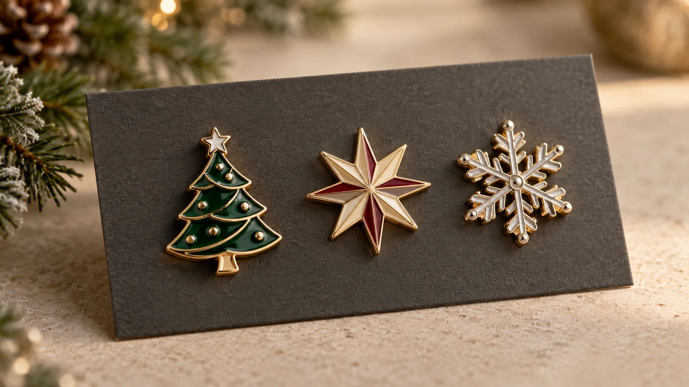

Una colección coordinada puede combinar un motivo de temporada con la identidad de una empresa, un evento o una comunidad.
Los pines navideños personalizados para empresas pueden cumplir más de una función: agradecer a un equipo, acompañar un regalo para clientes, identificar al personal de un evento o convertirse en un pequeño producto de colección. Para que no parezcan un artículo promocional genérico, hay que pensar juntos el diseño, la calidad de acabado, la forma de entrega y la fecha real de recepción.
La campaña ya está en marcha en el sector de regalos corporativos. Por ejemplo, el catálogo de Navidad 2026 de Below presenta regalos personalizables para equipos, clientes y eventos; Greenly incluye Navidad 2026 entre sus campañas actuales y recomienda planificar pedidos en octubre. Son señales de calendario comercial, no datos de volumen de búsqueda ni una garantía de plazo para fabricar pines.
Esta guía explica cómo preparar una especificación clara para pines de Navidad personalizados, qué opciones de fabricación comparar y qué información enviar para recibir una propuesta útil.
Ideas de diseño: que sea navideño sin perder la identidad de marca
El punto de partida no tiene que ser el típico árbol o copo de nieve. El mejor diseño suele combinar un elemento reconocible de la temporada con algo propio de la organización: una silueta de producto, un edificio, una mascota original, una flor local, una fecha o un símbolo de equipo.
- Para empleados: un emblema discreto de agradecimiento que pueda llevarse en una chaqueta, una mochila o una tarjeta de regalo.
- Para clientes y distribuidores: el logotipo integrado en un motivo estacional, sin convertir el área esmaltada en una miniatura difícil de leer.
- Para tiendas y marcas: un diseño coleccionable con tarjeta de presentación y una pequeña serie de variantes.
- Para hoteles, museos o turismo local: un monumento, paisaje o símbolo de la ciudad con un detalle de invierno, pensado como recuerdo y no como anuncio.
- Para eventos de empresa: una insignia identificativa para el personal o un obsequio que incluya el nombre corto del encuentro y el año.
Antes de cerrar el arte, visualízalo a tamaño final. Un texto largo, líneas demasiado finas o muchos colores separados pueden perder claridad en un pin pequeño. Prioriza una forma fácil de reconocer, pocos niveles de lectura y buen contraste entre metal y esmalte. Si el dibujo incluye personajes, escudos o marcas ajenas, confirma que tienes permiso para producirlos y distribuirlos.
¿Un solo modelo o una colección navideña?
Un único diseño simplifica presupuesto y reparto. Una serie de varios modelos puede funcionar mejor para una tienda, una campaña interna por sedes o una iniciativa en la que las personas quieran completar el conjunto. La clave es decidirlo antes de cotizar: cada silueta, molde, color, tarjeta y cantidad afecta al plan del pedido.
Las ediciones limitadas son una mecánica observable en el merchandising de fandom: la comunicación oficial de D23 2026 describió una tienda dedicada a pins de edición limitada, con nuevos diseños en distintos días del evento. No demuestra que todas las audiencias respondan igual, pero ofrece una idea que una marca puede adaptar con diseños propios: revelar una variante por fecha, sede o hito y explicar claramente cuántas piezas hay disponibles, sin sugerir escasez ficticia.
Para planificar una colección, crea una ficha por diseño con: nombre, dibujo, medida, acabado, cantidad, variante, tarjeta y destino. Mantén algunas reglas compartidas —por ejemplo, una familia de colores, el mismo tipo de cierre y una tarjeta común— para que la serie se reconozca como conjunto. Si la campaña tiene una orientación coleccionable, consulta también nuestra guía de colecciones de pines para eventos.
Cómo elegir esmalte, acabado y cierre
La técnica se debe elegir por el aspecto y el uso, no solo por el nombre. Estas son decisiones iniciales para comparar con el fabricante:
| Decisión | Puede encajar cuando… | Qué revisar antes de aprobar |
|---|---|---|
| Esmalte blando | Buscas color definido con relieve perceptible y un aspecto dinámico. | Separación entre colores, ancho de líneas y tolerancia de la superficie. |
| Esmalte duro | Prefieres una superficie lisa y una presentación más pulida. | Lectura del arte, brillo, borde metálico y coste según el diseño. |
| Impresión protegida | El diseño necesita degradados, sombras o detalles ilustrados. | Resolución, protección superficial y fidelidad de color aprobada. |
| Baño metálico | El borde y las zonas sin esmalte forman parte de la estética. | Contraste entre oro, níquel, cobre, negro o acabado antiguo y los colores. |
| Cierre | La pieza se llevará en solapa, gorro, mochila o tarjeta. | Peso, tamaño, cantidad de postes y facilidad de uso para el público. |
El esmalte blando suele conservar una diferencia de nivel entre el metal y el color; el esmalte duro se pule para obtener una superficie más uniforme. La impresión puede resolver ilustraciones que no se traducen bien a áreas de color separadas. Pide que el proveedor valore el archivo concreto: el resultado depende del tamaño, las líneas, el número de colores y el metal base. Puedes comparar acabados en la guía de pines esmaltados personalizados y revisar acabados para insignias metálicas.
Para el cierre, un pin ligero de solapa puede necesitar una solución distinta a una pieza grande para mochila. Si la insignia se fija a una prenda delicada, pregunta si el imán resulta adecuado para el peso y el uso previstos. Revisa nuestra explicación sobre cierres para pines metálicos.
El packaging también forma parte del regalo
Una tarjeta personalizada puede incluir el nombre de la campaña, una breve nota de agradecimiento, el año o un código QR hacia una página útil. Una bolsa individual ayuda a proteger y separar las piezas; una caja puede ser apropiada para un set de regalo. No añadas capas solo por hacer el paquete más grande: el formato debe facilitar almacenamiento, transporte y entrega.
Si los pedidos se distribuirán entre varias oficinas, países o puntos de venta, define cómo separar los lotes y qué información debe aparecer en cada caja. Además, la regulación europea de envases PPWR comenzó a aplicarse en la UE el 12 de agosto de 2026, con medidas que entran en vigor por fases. La Comisión Europea explica el calendario y el alcance general. Esto no significa que todos los requisitos se apliquen de la misma forma a cada tarjeta o caja: confirma con tu proveedor o asesor qué obligaciones corresponden al envase y al mercado concretos, y evita promesas ambientales sin respaldo verificable.
Planifica el pedido desde la fecha de recepción
En una campaña de fin de año, la fecha importante no es solo cuándo se inicia la producción, sino cuándo el lote debe estar recibido, revisado y listo para repartir. No hay un plazo único válido para todos los pines navideños personalizados: influyen el molde, el número de diseños, las muestras, el packaging, la cantidad y el transporte.
- Define el objetivo y la fecha: ¿se entregará en una cena de empresa, se enviará junto a pedidos de clientes o se venderá en tienda?
- Decide unidades por variante: separa empleados, clientes, sedes, invitados y stock de reposición.
- Envía el brief completo: diseño, medida, técnica, acabado, cierre, packaging, cantidades y dirección de entrega.
- Aprueba el arte técnico: comprueba tamaño real, texto, posición del borde, áreas de color y el reverso del pin.
- Confirma muestras y calendario: si el proyecto requiere muestra física, incorpora su revisión al plan; solicita por escrito fechas previstas de producción y transporte.
- Reserva margen para recepción: cuenta con tiempo para inspeccionar cantidades, embalaje y posibles incidencias antes de repartir.
Como el sector de regalos corporativos ya está presentando campañas de Navidad 2026, conviene iniciar la conversación sin esperar a tener cada detalle cerrado. Las páginas de temporada de Below y Greenly sirven como referencias del calendario comercial; sus plazos y condiciones no deben extrapolarse a una fabricación OEM de pines. Pide siempre una fecha confirmada para tu especificación y destino.
Lista de comprobación para pedir pines de Navidad
- Uso: regalo para empleados, clientes, evento, reventa o colección.
- Archivo: logotipo o ilustración y, si existe, versión vectorial.
- Cantidad total y unidades por cada diseño o variante.
- Medida, forma y grosor aproximados.
- Colores, técnica de esmalte o impresión y baño metálico.
- Tipo de cierre y prenda o superficie en la que se utilizará.
- Tarjeta, bolsa, caja, montaje o agrupación por destino.
- País y código postal de entrega, fecha de recepción y margen de reparto.
- Presupuesto objetivo y posibilidad de repetir la colección en otro lote.
Con esta información, el proveedor puede proponer opciones comparables en lugar de una cifra sin contexto. Nuestra página de pines personalizados para empresas resume usos corporativos; la guía sobre precio y cotización de insignias metálicas explica qué factores suelen modificar el presupuesto. Para organizar los datos de diseño y producción, consulta el proceso de pedido personalizado.
Preguntas frecuentes
¿Qué diseño funciona para un pin navideño corporativo?
Combina un símbolo reconocible de la Navidad con un elemento propio de la marca, el lugar o la campaña. Simplifica textos y detalles para que se lean en el tamaño real del pin. Si aparecen personajes o logotipos de terceros, confirma los derechos de producción y distribución.
¿Conviene esmalte blando o esmalte duro?
El blando deja una textura perceptible y puede funcionar bien para diseños vivos; el duro ofrece una superficie lisa y una presentación pulida. La decisión depende del arte, el tamaño, los colores, el presupuesto y la muestra aprobada.
¿Con cuánta antelación debo pedirlos?
No existe un plazo universal. Envía cuanto antes la fecha de recepción y solicita un calendario que contemple revisión del arte, muestra si corresponde, producción, packaging y envío. El plazo solo queda claro cuando se conoce la especificación y el destino.
¿Puedo crear una serie de pines navideños personalizados?
Sí. Define el número de diseños, las unidades por referencia, los elementos visuales compartidos y el sistema de presentación antes de cotizar. Una tarjeta o empaque común ayuda a que las variantes se entiendan como una colección.
¿Qué debo enviar para pedir presupuesto?
Diseño o referencia, cantidad por modelo, tamaño, colores, técnica, acabado, cierre, packaging, país de entrega y fecha objetivo. Si aún no tienes el arte final, una referencia visual y una cantidad aproximada sirven para empezar la evaluación.
Un detalle de temporada que puede permanecer
Un buen pin navideño personalizado no necesita acumular adornos. Funciona cuando tiene una idea clara, se fabrica con una técnica adecuada al diseño y se entrega en un formato pensado para quien lo recibe. Para una campaña corporativa, cerrar desde el principio cantidad, acabado, packaging y fecha de recepción facilita tanto la cotización como la aprobación.
Si estás preparando regalos de empresa, una colección o un evento de Navidad, envíanos la referencia visual, el número de unidades y la fecha en la que necesitas recibirlas. Podemos ayudarte a comparar materiales, esmaltes, cierres y presentación para tus pines navideños personalizados para empresas.
Referencias y fuentes consultadas
- Below: Catálogo de Navidad 2026 — campaña de regalos personalizables para equipos, clientes y eventos.
- Greenly: merchandising personalizado para empresas — muestra Navidad 2026 entre sus campañas de temporada y recomienda planificar en octubre; se usa como señal de calendario, no como dato de búsqueda.
- The Walt Disney Company: D23 2026 merchandise and Pin Store — ejemplo oficial de pins de edición limitada presentados en varios días de un evento.
- Comisión Europea: nuevas reglas de envases aplicables desde agosto de 2026 — fuente primaria para el calendario general de aplicación del PPWR en la UE.